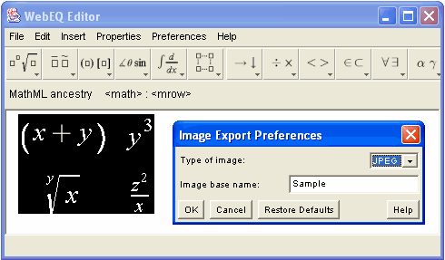

Image Export Preferences
When saving an equation as an image, you can set various properties
for the resulting image. They are:

-
Type of Image
-
You can choose to generate either PNG or JPEG image files. Usually
PNG is the superior format.
-
Image base name
-
WebEQ Editor attaches a ".png" or ".jpg" extension to the base name to
form the final filename for an image. Thus, if the base name is "Image", and you
are saving in PNG format, the ultimate filename will be "Image.png".